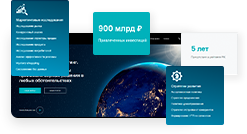
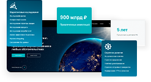

КОМПЛЕКСНЫЕ B2B РЕШЕНИЯ
Мы создаем комплексные веб-сервисы с возможностью интеграции с мобильными приложениями, CRM и ERP системами, e-commerce. Предлагаем все типы услуг, включая поддержку, внедрение новых модулей, интеграцию. Программирование, верстка, дизайн (в том числе отрисовка баннеров), DevOps и консалтинг.
Интеграции, включая создание API — также включены (прочтите о нашем опыте в этом).
Выделяем персонального менеджера проекта, аналитика и команду под проект. Пишем техническое задание по сложным задачам, чтобы избежать неоправданных ожиданий и просрочек. Предоставляем детальную отчетность каждый месяц. Индивидуальные тарифы могут быть по предоплате - абонентская плата или депозит; и постоплата.
ТОРГОВО-ЗАКУПОЧНЫЕ СИСТЕМЫ
Ваша электронная торговая площадка или торгово-закупочный портал предприятия, специализированные под индивидуальный профиль, позволит реализовать систему торговли в интернете. Эти системы, автоматизирующие бизнес-процессы, процедуры закупок и оптовых продаж в соответствии с требованиями отрасли необходимы как оптовым компаниям, так и крупным предприятиям.
Мы предлагаем к внедрению современные ИТ-решения для бизнеса на базе собственных разработок. Система позволяет использования средств защищенного электронного документооборота, разработки и эксплуатации высоконагруженных веб-приложений, синхронизации разветвленных структур данных любой сложности с системами сторонних разработчиков и пользователей. Многолетнее совершенствование нашей системы позволило добиться сегодня полной масштабируемости, гибкости, возможности индивидуальной кастомизации под нужды каждого клиента и способности выдерживать большие нагрузки.
CMS СИСТЕМЫСИСТЕМЫ
Когда приходится разрабатывать дополнительные модули под специфические функции в какой-либо из стандартных систем управления содержимым сайта, не всегда оказывается возможным добиться требуемого уровня удобства использования этого инструмента. Порой и вовсе становится крайне затруднительной реализация задания из-за ограничений «стоковой» CMS. Фирменная CMS дает пользователю такие уникальные преимущества, как дополнительные удобства, функционал и безопасность. Мы реализуем проекты заказчиков на основе принципов модульности, расширяемости и простоты в управлении. Для ее масштабирования пользователю не приходится повторно обращаться к разработчику и не требуются специальные знания программирования, достаточно уметь работать с офисными программами. Ваша CMS не будет содержать ненужных модулей и отсутствие лишних элементов упростит и ускорит работу с контентом сайта.


 
